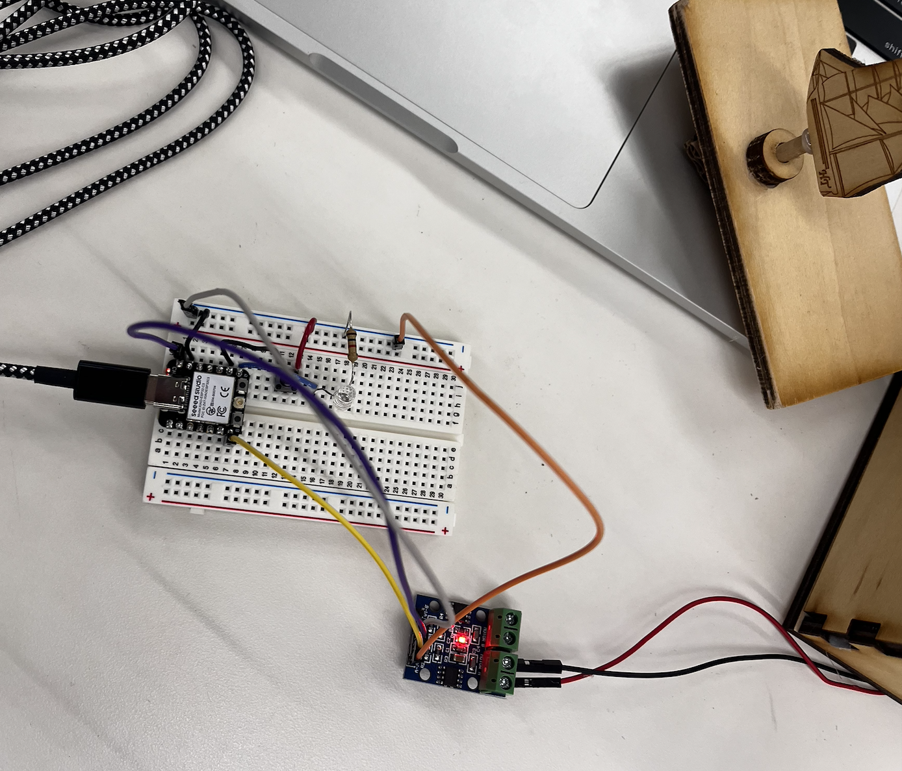

For week 4, we were introduced to basic electronics, learned curcuitry, and made our own programs with the Xiao ESP32 Microcontroller through Ardunio IDE. This experience was my first time programing with physical curcuits and using Ardunio IDE. I applied basic coding knowledge I have from previous computer science course to intepret the code.

Breadboard circuit setup connected to sculpture.
This video shows a set up where the motor on my kinetic sculpture will turn on when I press and hold down on the button. At the same time, there is a led light that lights up when the button is pressed to signify that the motor is spinning. When the button is let go, the led and motor turns off at the same time.